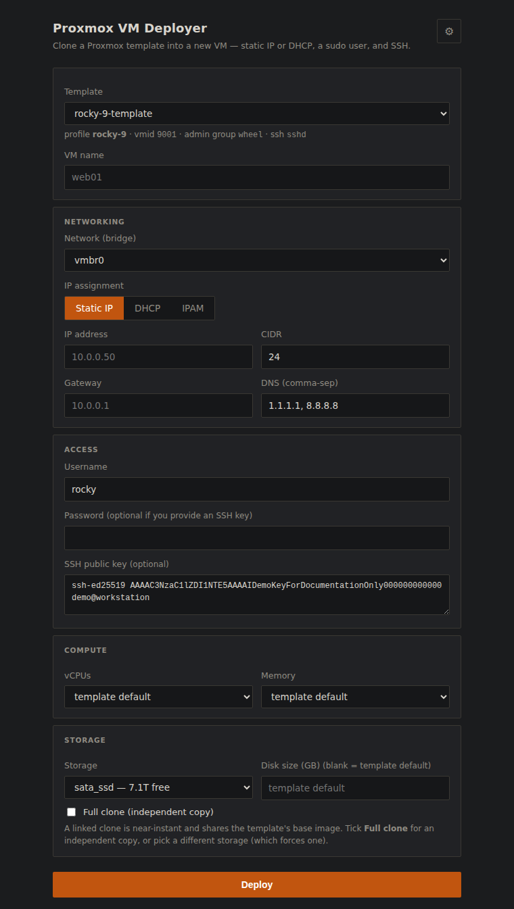
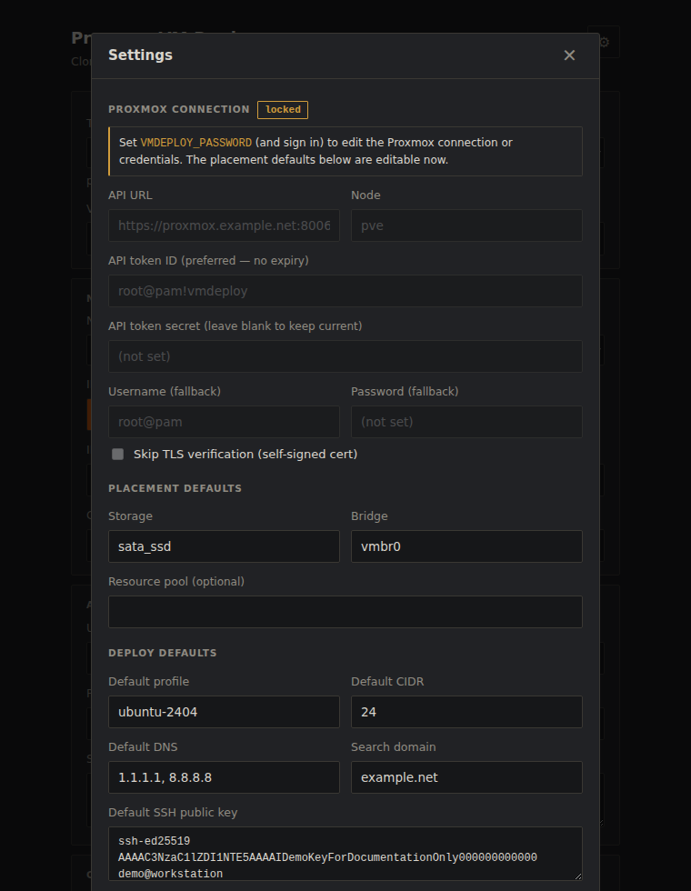

The deployer didn't need porting. Two files did.
A tool that builds golden images and clones them into working VMs was written against vCenter, then ported to bare ESXi. Moving it to Proxmox looked like the big one — different vendor, different API, different everything. It wasn't. Here is what actually had to change, and the three things that only broke once it was running.
The tool is unglamorous and I use it constantly. It builds golden images from upstream cloud images, and then turns one into a running, reachable VM: pick a template, give it a name and an address, get back an IP you can SSH into. Sixty seconds, no console, no clicking through a wizard.
It was written for vCenter. Later it was forked for standalone ESXi hosts, which have no vCenter to clone through — that port replaced exactly one operation and kept everything else. So when a Proxmox node joined the estate, the question was how much of the tool was really about VMware, and how much was about deploying a VM.
The honest answer surprised me. Two files carried the entire port. Everything else — the web UI, the job runner, the settings dialog, the IPAM integration, the CLI's flags — moved across as renames.
What a deploy actually is
Strip the vendor away and a deploy is four steps: copy a template, hand the copy its identity, power it on, find out what address it got. Every hypervisor does all four. They just disagree about the second and fourth.
Step two is the interesting one, because it is the only moment you get to talk to the guest before it exists. The mechanism is cloud-init, which is baked into every modern cloud image and looks for its configuration in a "datasource" at first boot. The whole game is getting your configuration into a place that image will look.
On vSphere there is no cloud-init datasource in the platform. So VC-Deployer builds the
NoCloud payloads itself — a metadata document with the network stanza, a user-data document
with the login, gzips them, base64s them, and pushes them into VMware's
guestinfo.* key-value channel, where a VMware-specific datasource in the guest
picks them up. It works, it is well-trodden, and it is about a hundred lines of string
building that has to be exactly right.
# VC-Deployer: the config has to be manufactured, compressed and smuggled in
govc vm.change -vm web01 \
-e guestinfo.metadata=H4sIAAAAAAAAA… \
-e guestinfo.metadata.encoding=gzip+base64 \
-e guestinfo.userdata=H4sIAAAAAAAAA… \
-e guestinfo.userdata.encoding=gzip+base64Proxmox has a first-class cloud-init datasource. You set fields on the VM and Proxmox builds the NoCloud drive and attaches it for you:
# Proxmox: the config is just… configuration
$ qm set 101 --ciuser ubuntu --sshkeys "$KEY" \
--ipconfig0 ip=10.0.0.50/24,gw=10.0.0.1 \
--nameserver "1.1.1.1 8.8.8.8"That deleted the most intricate part of the codebase. The renderer, the gzip, the base64, the two payload formats — none of it survived the port, and nothing replaced it.
eth0 while the profile claimed
ens192. Proxmox generates network config that matches on MAC address.
There is no name to get wrong. The iface field simply stopped existing.
The templates we already had were the wrong templates
The original plan was the obvious one: we have five built templates, exported as OVAs. Push them at Proxmox, which since version 8.3 can import OVA files natively. One evening's work.
It would have produced five templates that cannot deploy.
The problem is what template-building means. Our build process doesn't just
install packages; it pins cloud-init's datasource list to [VMware], so the
guest stops probing and reads guestinfo directly. That is the right thing to do on vSphere
and it is fatal on Proxmox: the NoCloud drive Proxmox attaches would be ignored, cloud-init
would find nothing, and the VM would boot with no user, no key and no address. The disk
would import perfectly. The result would be useless.
Underneath that sat a second layer of the same problem — ens192 baked into
the annotation, open-vm-tools installed and qemu-guest-agent absent, VMware paravirtual
drivers instead of virtio. Fixing all of it means booting each imported VM and re-prepping
it in the guest, which is most of a template build, started from a worse image.
So the templates get rebuilt from the same upstream cloud images, using the same profile metadata. And that turned out to be the easy direction, because the Proxmox build is shorter than the vSphere one:
| Build step | vSphere | Proxmox |
|---|---|---|
| Get the image | download qcow2 | download qcow2 |
| Convert | qemu-img → streamOptimized VMDK | — none, imports directly |
| Install guest tooling | boot with a seed ISO, install open-vm-tools, shut down | virt-customize, offline |
| Wrap in a VM | hand-built shell (guestId, firmware, controller, adapter) | qm create + import-from |
| Mark as template | vm.markastemplate | qm template |
The seed-ISO prep boot exists on vSphere for one reason: guestinfo can't be read until
open-vm-tools is installed, so you have to boot the image once to install the thing that
lets you talk to it. Proxmox reads stock cloud images as they ship, so there is nothing to
bootstrap. The only in-guest change we make is installing qemu-guest-agent, and
that can happen offline, on the disk image, with no boot at all.
What the API makes you do differently
The vSphere client shells out to govc. The Proxmox client speaks HTTP. That
sounds like a downgrade in convenience and is actually the opposite: it removed the last
binary dependency, so the CLI now needs nothing but Python, and the container image lost a
whole layer.
Three things about the Proxmox API shape the client:
- Every mutation is asynchronous. Clone, resize, start — they return a task id
(a "UPID") and do the work in the background. Miss that and your code races the
hypervisor: you'll try to configure a VM that is still being cloned. One
_wait_taskhelper polls the task to completion and asserts a clean exit, and every mutating call goes through it. That single function is what makes the rest of the client look synchronous and boring. - Tokens beat tickets. Password auth returns a ticket that expires in two hours
and requires echoing a CSRF header on every write. An API token is one header, forever.
The client prefers the token and keeps password auth as a fallback so a fresh install
works before anyone has run
pveum. - Templates are a real thing. On vSphere the client finds candidates by name —
anything matching
*-template— then filters by annotation. Proxmox has an actual template flag, so discovery asks the hypervisor instead of guessing from a naming convention.
There was also a small free win. Asking vSphere for its datastores gets you names. Asking Proxmox for its storages gets you names and capacity, in the same call — so the storage picker can show free space without any extra work.

Three things that only break when you run it
The port looked finished well before it worked. Ubuntu deployed on the first try, in twenty-two seconds. Rocky Linux hung, and stayed hung, and the reasons were all things no amount of reading the API docs would have surfaced.
1. The CPU model that panics an entire distro family
The Rocky VM booted, reached the kernel, and stopped. No network, no console output past early boot, no ARP entry on the bridge — it had never sent a packet. Screenshotting the framebuffer through the QEMU monitor showed GRUB and then nothing useful, which sent me looking at partition tables and UEFI, both dead ends.
What actually settled it was reading the serial console from a cold boot, which required
noticing that qm terminal needs a TTY and going around it:
$ socat -u UNIX-CONNECT:/var/run/qemu-server/106.serial0 - > boot.log
…
[ 1.198043] Run /init as init process
Fatal glibc error: CPU does not support x86-64-v2
[ 1.200459] Kernel panic - not syncing: Attempted to kill init!Proxmox creates VMs with the kvm64 CPU model by default, which advertises
only the original x86-64 baseline. RHEL 9 and everything rebuilt from it are compiled for
x86-64-v2. So glibc — not the kernel, not the bootloader — refuses to start PID 1,
and the kernel panics because init died. Ubuntu still targets the older baseline, which is
precisely why it worked and hid the problem.
One flag at build time fixed it: --cpu x86-64-v2-AES. I set it as the
default for every template and considered the matter closed.
It wasn't. Building the Rocky 10 template later produced the identical panic with one character different:
Fatal glibc error: CPU does not support x86-64-v3RHEL 10 raised the baseline again. So the setting is not a site-wide default at all — it
is a property of the guest OS, and it moves. It now lives in the per-OS profile, where
rocky-10 declares CPU_TYPE="x86-64-v3" and overrides the site
default, because an OS requirement outranks a site preference.
The builder also refuses, up front, to build a template for a baseline the host cannot
provide — checking for avx2 before it starts rather than letting you find out
from a panic much later:
$ ./build-template.sh rocky-10
==> CPU model: x86-64-v3 (host has avx2)
==> SELinux policy detected — will relabel after customisingkvm64 is a
conservative, maximally-compatible choice that quietly stopped being compatible with a
whole distro family — and then, one major release later, stopped being compatible at a
different level. The first fix taught me the wrong lesson: I treated a moving
target as a constant, and it moved within the same afternoon. The failure surfaces as a
kernel panic five layers away from the setting that caused it, and the panic text is the
only thing that names the real number.
2. SELinux labels, invisibly wrong
This one I found while chasing the first, and it is real even though it wasn't the
culprit. Customising a disk image offline with virt-customize writes files as
root from outside the guest. On an SELinux-enforcing image — every EL-family cloud image —
those files land with no security context, and an enforcing guest can hang early in boot
with no console output and no network. Which is to say: with symptoms indistinguishable
from the CPU panic.
The builder now checks whether the image carries a policy and relabels when it does. It costs one flag and removes an entire category of "the image is haunted".
3. The clone that is instant, until it isn't
On ZFS and LVM-thin, cloning a template is copy-on-write and effectively free — the deploys above finish in twenty-odd seconds because almost no bytes move. But Proxmox cannot link a clone across storages. Ask for the VM to land on a different pool than its template and you silently get a full copy: the same button, the same form, minutes instead of seconds.
That is a UX problem, not a bug, and it is the kind that erodes trust in a tool. The client works out which mode a given request implies and says so in the form before you commit, rather than letting you discover it from a progress bar that stopped moving.
Porting is a code review you can't skip
Rewriting a layer forces you to read every line that touches it, with fresh eyes and a working test target. That found two bugs that had been sitting in the original.
The first: when a deploy fails partway, the tool destroys the half-built VM so a retry isn't blocked by wreckage. That rollback stopped the VM and then deleted it — but on Proxmox the stop is asynchronous like everything else, so the delete raced it and failed against a VM the hypervisor still considered running. The rollback swallowed the error, as rollbacks should, so it failed silently and left exactly the wreckage it existed to prevent. I only noticed because a leftover VM was sitting there after a failed test.
The second was older and dumber: the installer copies the CLI's Python files to
/opt, and its list of files omitted config.py — which the
hypervisor module imports. Anyone installing the vSphere client that way would get an
ImportError on first run. It had been shipping like that.
Where it landed
Same form, same flags, same job progress, same IPAM integration — a different hypervisor underneath. The two screenshots are the same application, three commits apart:

nic field.nic field to be wrong, and a clone-mode control.What the port cost, honestly accounted:
| Component | Fate |
|---|---|
| hypervisor client | Rewritten. govc subprocess wrapper → REST client (auth, task-waiting, inventory). |
| deploy engine | Rewritten, and shorter — the cloud-init renderer was deleted, not replaced. |
| template builder | New, and simpler than its vSphere counterpart. |
| web UI | Relabelled. Portgroup→bridge, datastore→storage, plus the clone-mode control. |
| CLI | Same flags, minus two the platform doesn't expose. |
| config / jobs / IPAM | Key renames and three strings. |
Two flags didn't survive: the platform has no toggle for SSH password authentication, and it derives the guest hostname from the VM name, so the two can no longer differ. Both were reachable by writing our own cloud-init payload again — but that requires putting files on the node's filesystem, which would have meant giving the web container an SSH key to the hypervisor. Trading a pure-API deployment for two rarely-used options is a bad trade, so they're documented as gone.

Closing thought
The instinct with a port is to budget for the vendor — new API, new SDK, new vocabulary. That part is real but it is mechanical, and it is the part you can see coming.
What actually costs time is the layer below the API, where the platform's defaults meet your images: a CPU model chosen for compatibility that a distro family has outgrown, a file written from outside the guest with no security label, a clone that is free until an innocuous dropdown makes it expensive. None of those appear in any API reference. All three appeared within an hour of running the thing for real.
The corollary is cheerful, though. If your tool is honest about where the hypervisor ends, most of it is not about the hypervisor at all — and the second port is much cheaper than the first.